WMS event workflow
Request a LiveLabs Event Code
A 15-minute guide to completing the WMS request, tracking code publication, and opening the event on LiveLabs.
REQUEST AND PUBLICATION
Submitting the form requests an Event Code; it does not issue one. WMS first confirms submission and starts review, then emails you after approval. A scheduled publishing job runs next; share the code only after the separate Event Published email confirms deployment.
INTRODUCTION · 15 MINUTES
Introduction and requirements
Use an Event Code to manage registrations, track attendance, and organize an event, from a small seminar to a large conference. This walkthrough covers requesting the code in the Workshop Management System (WMS), tracking approval and publication, and entering the published code on LiveLabs.
Objective: Request an Event Code.
What do you need?
Have access to the Workshop Management System and identify the workshop by title, WMS ID, or LiveLabs ID.
- Only workshops with the public or event publish type can be selected.
- Know the requestor, start and end dates, and timezone. Other notification contacts and the event title are optional.
- For a green-button event, decide the maximum users, concurrent users, and attendee completion time.
Where WMS shows the workshop publish type
In the workshop's Publishing tab, select Publish to LiveLabs to view the publish type. Event Code requests can use workshops whose publish type is public or event.
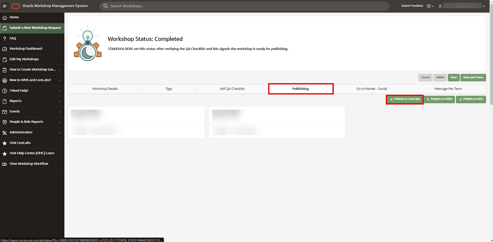
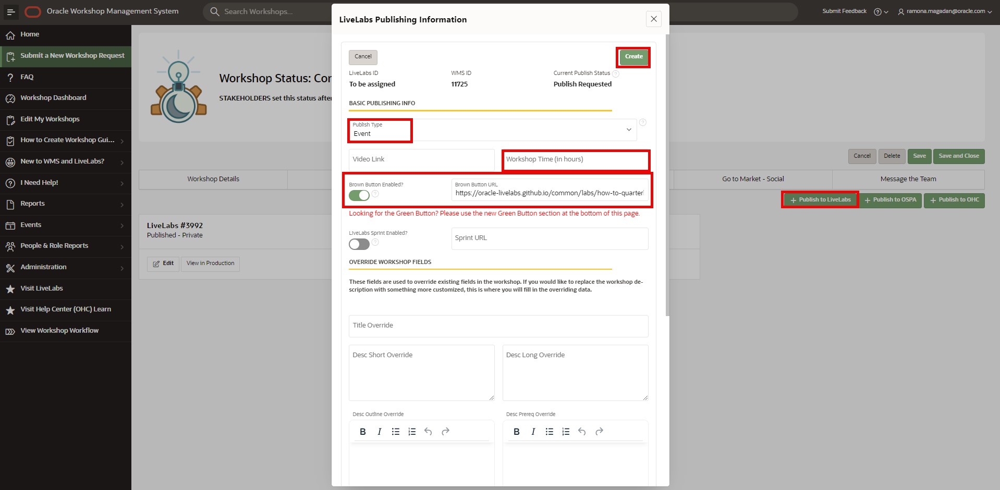
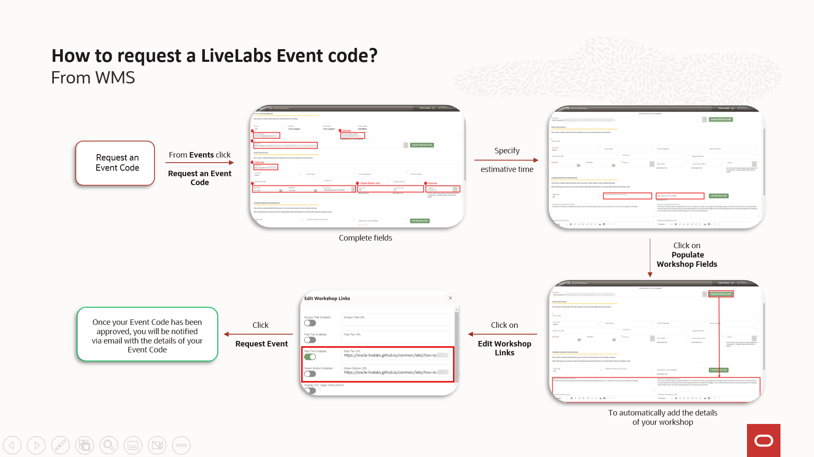
VIDEO WALKTHROUGH
Watch the WMS request walkthrough
Watch the WMS request here, or continue with the illustrated steps below. Use the player controls to play or pause, seek, adjust volume, or enter full screen.
IN WMS · EVENTS
Complete the request form
-
Open the Event Code request
In WMS, open Events and select Request an Event Code.
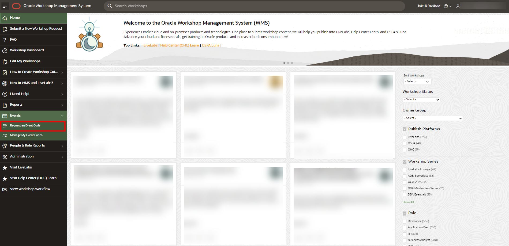
Select Request an Event Code from the Events menu. -
Complete the event request form
Provide the event requestor, workshop, start and end dates, and timezone. Add other people to notify and an event title when useful.
For a green-button event only, set Max Users (how many people may use the code) and Concurrent Users (how many may use it at the same time). Tenancy is optional; use it only when the event needs a specific tenancy. A tenancy without the required workshop resources can break the workshop.
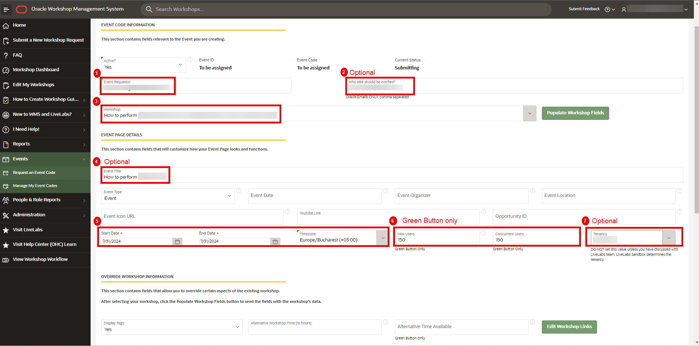
Required event details and optional capacity settings. -
Set workshop and attendee completion times
Enter the estimated time a user needs to complete the workshop. For a green-button event, also set how long attendees have to finish. The attendee limit is 8 hours; explain a longer request in Remarks to the LiveLabs team for follow-up.
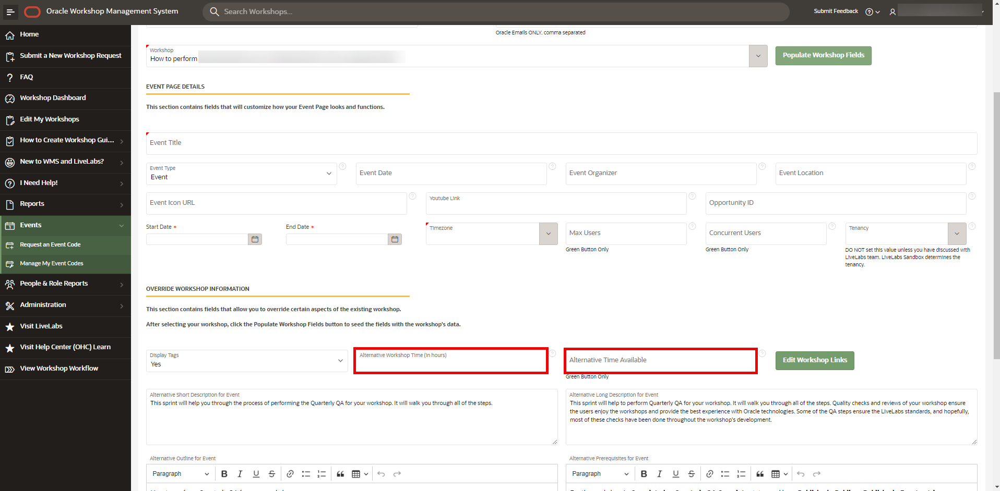
Workshop estimate and green-button attendee time limit. -
Populate workshop fields
Select Populate Workshop Fields to automatically add the workshop details.
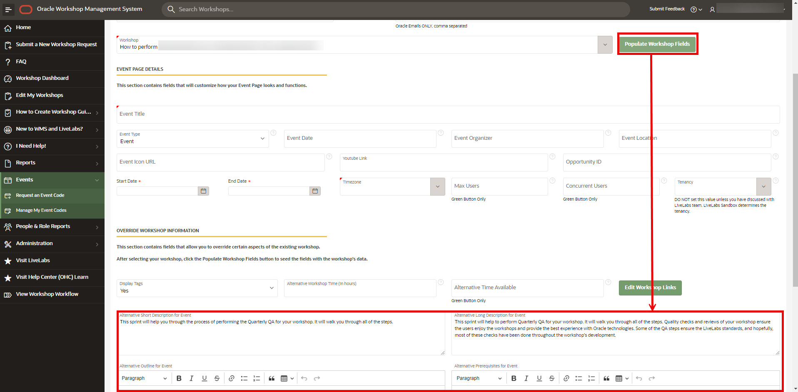
Populate the form with the selected workshop's details. -
Verify workshop links
Select Edit Workshop Links. Confirm that the URLs are populated and working before submitting.
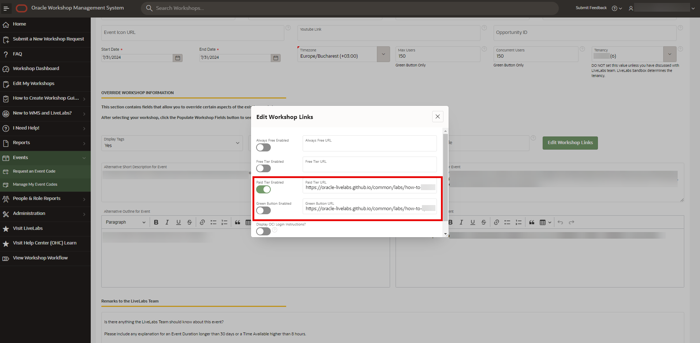
Check that the event's workshop links are present and open correctly.
- Required event details
- Requestor, workshop, start date, end date, timezone, and the workshop completion estimate.
- Optional details
- Additional people to notify, event title, and a specific tenancy when the event requires it.
- Green-button capacity
- Maximum users, concurrent users, and attendee completion time.
- Workshop links
- Use Populate Workshop Fields, then check the URLs under Edit Workshop Links.
FINAL CHECK
Review and submit
- The selected workshop is the right one and has a public or event publish type.
- Event dates and timezone are correct, and the workshop links work.
- Green-button capacity and attendee time fields are complete when they apply.
- A specific tenancy is included only when required and suitable for the workshop.
When the form is complete, select Request Event to send it for approval.
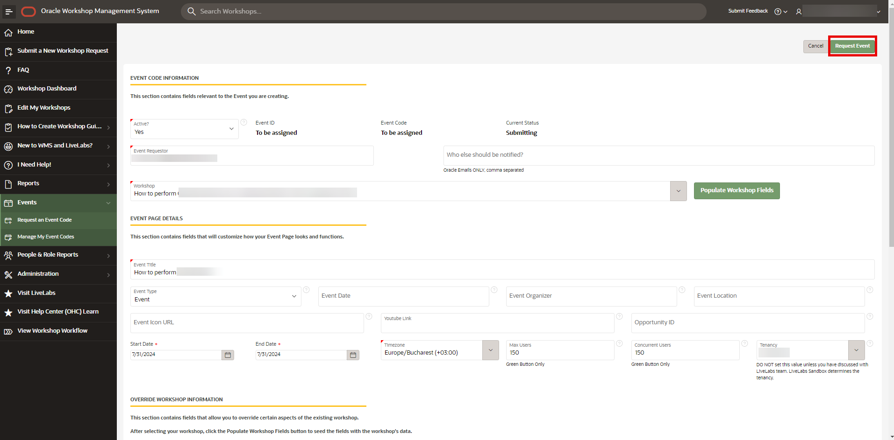
AFTER SUBMISSION · APPROVAL AND PUBLICATION
Follow the request from submission to LiveLabs
Follow the emails in order. The submission email confirms receipt, review comes next, and approval is followed by a scheduled publishing job. Copy and share the code only after WMS confirms that the event is published to LiveLabs.
-
Receive the submission email
After you select Request Event, WMS emails the requestor to confirm that it received the Event Code request. This message means the request is under review; it is not an approval and does not contain a usable code.
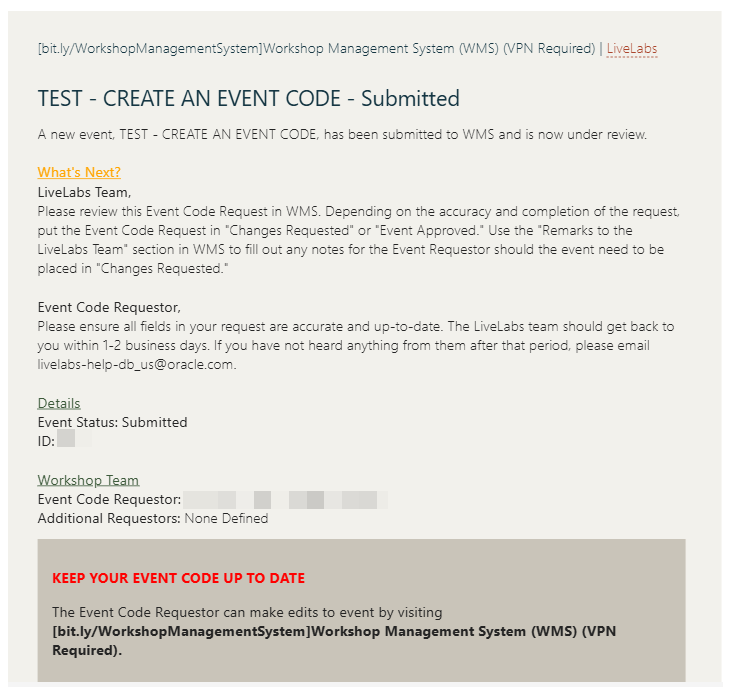
1 · Submitted: the confirmation email says the request is under review. The LiveLabs team reviews the request details. Allow the 1–2 business days noted in the submission email. While it is pending, the WMS record can show Submitted and To be assigned. If WMS requests changes, update the request using the review notes; the request returns for review after you respond.
-
Receive the approval email
After review, WMS emails the requestor when the Event Code request is approved. Approval means the request passed review; the code is not available to share yet. The notice says the code will be pushed to LiveLabs sometime in the next 24 hours.
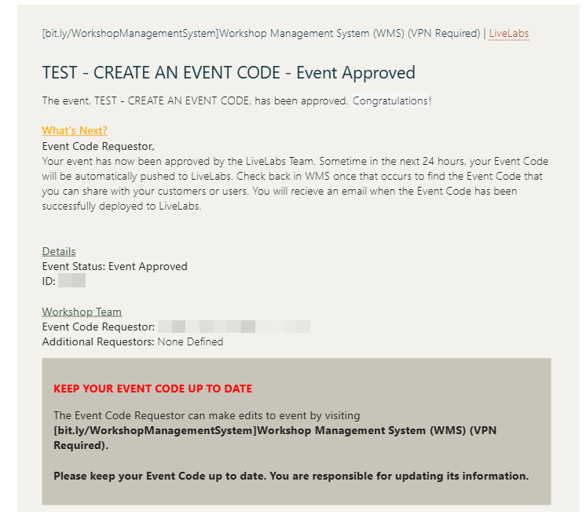
2 · Approved: the approval email says to wait for LiveLabs deployment. After approval, the scheduled publishing job publishes the event and its code to LiveLabs. Wait for the job to run. WMS then sends a separate Event Published email after deployment succeeds; the approval email is not the publication confirmation.
-
Copy the code from the Event Published email
The Event Published email confirms that the code is live and shows it under Your Event Code. Copy the code exactly. You can also check the request in WMS after publishing. Confirm the event name and date before sharing the code with participants.
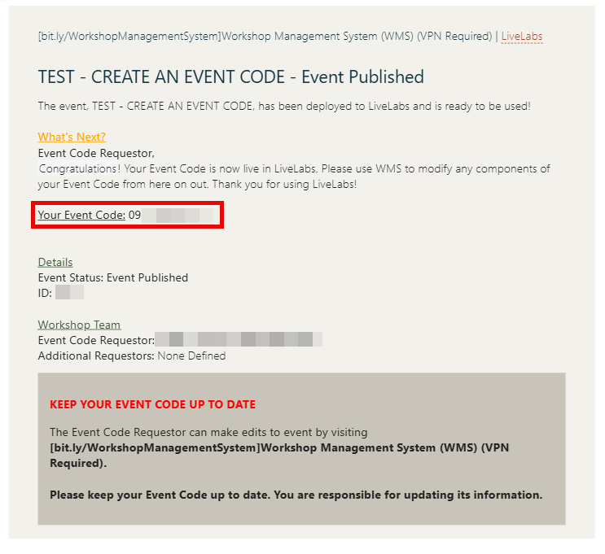
Step 3 · Published: copy the live Event Code from the email or its WMS request record. -
Enter and submit the code on LiveLabs
Open LiveLabs and select Event Code in the top navigation. Enter the code you copied, then select Submit Event Code. Participants use the same steps with the code you share.
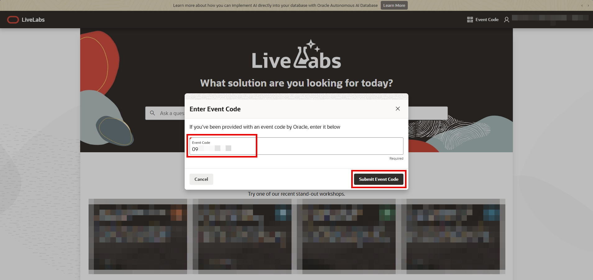
Step 4 · Enter the copied code and select Submit Event Code. -
Open the event page
After LiveLabs accepts the code, it opens the associated event page. Check that the event title and date match the event you expect, then select Start to access the event workshop.
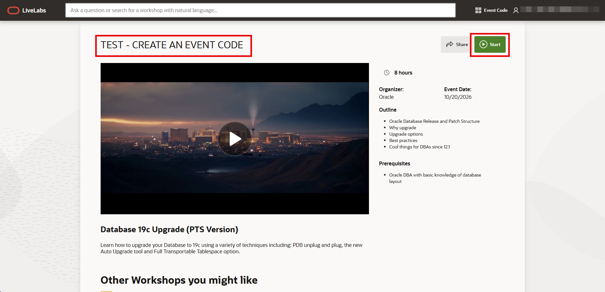
Step 5 · Confirm the event details and select Start.